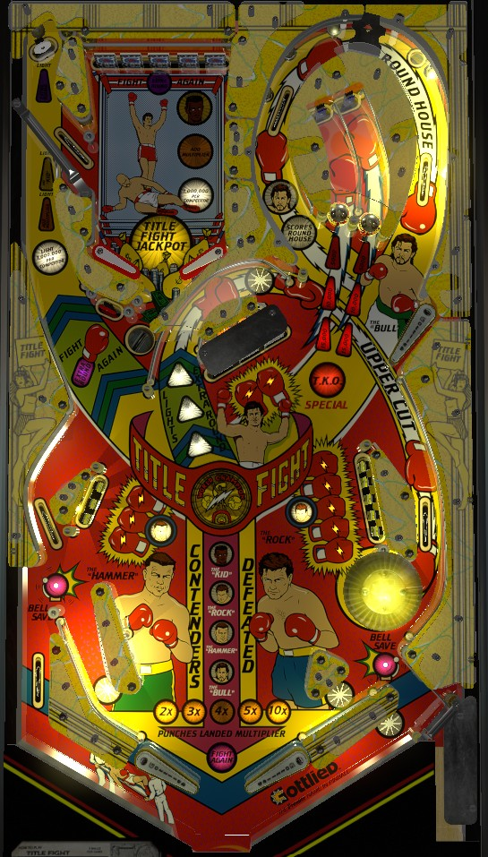

Title Fight's scoring comes from two places: Roundhouse loops in the upper right and the Ring mini-playfield in the upper left. Consecutive Roundhouse loops each score 100,000 more than the last up to 1,000,000 per shot, and it's not that hard to find the right rhythm. Clearing the Ring drop targets gives the award selected; the white light (1,000,000 per Contender) is preferable, but if a different award is lit, try to collect it anyway so that 1,000,000 per Contender is lit more often. If you happen to start multiball from the mystery saucer at the Ring's exit, unlight all 10 boxing gloves around the lower playfield for 3,000,000.
The below picture of Title Fight's playfield was taken from the VPX recreation by Bodydump and Goldchicco.

Title Fight does not have a skill shot in the conventional sense. It is possible to short plunge the ball directly to the flippers, but there's no reason to do this. A full plunge will go up the left orbit and land in the Ring mini-playfield. You can time your plunge to try to choose which of the moving awards you'll play for in the Ring. The Ring is explained in more detail in the next section.
The mini-playfield can be accessed at any time on a plunge or shooting the left "orbit". There are 4 scanning awards shown both in the left shot itself and the Ring mini-playfield. Hitting the white standup target in the top corner of the game or the rollover switch that feeds the ball into the mini-playfield will lock in whichever award is lit. From here, you have 5 seconds (though the exact length of a "second" seems to be adjustable) to complete all 5 drop targets at the top of the mini-playfield to score the selected award. Each drop target scores 5,000 points on it own. If you succeed in completing the bank, the selected award will change and the drop targets and time limit reset, so you can earn more awards. If time runs out, the flippers in the mini-playfield are locked so the ball drains. Draining in any way will funnel the ball into the Mystery saucer.
The 4 scanning awards, from bottom to top, are:
If you have collected all 4 contenders, the next trip to the Ring is played for Title Fight Jackpot, which is always 5,000,000 points. This is also explained in more detail in the Contenders section below.
The goal of Roundhouse loops is to use the upper right flipper to shoot clockwise around the Roundhouse loop as many times as you can in a row without hitting any other switch along the way. To access the loops, use the lower left flipper to shoot up the right side of the table; a one-way gate at the top of the loop will stop the ball, and it will fall to the upper right flipper at controlled speed. Now, get into a rhythm with the upper flipper whacking the ball around the loop as much as possible. The first loop scores 100,000 points, and each consecutive loop without hitting any other switch scores an additional 100,000, up to a maximum of 1,000,000 points per loop. Each shot around the loop also awards one Punch, increasing the end of ball bonus, and awards The "Bull" contender if he is not already collected.
There are 4 Contenders to collect around the game. Contenders are lit by either completing the following requirements, or earning Spot a Contender from the mystery saucer.
Collecting all 4 contenders means that the next trip to the Ring mini-playfield is played for Title Fight Jackpot, and requires two completions of the Ring drop targets within 15 seconds to score. On default settings, the Jackpot is always a flat 5,000,000 points and cannot be increased, but there is an option to have the Jackpot be a progressive value that starts at 1,000,000 points and increases by 200,000 each time a ball is played that does not collect the Jackpot (I have not confirmed the maximum Jackpot value under these settings, but it is likely around 10,000,000 points). Collecting a Jackpot awards 10 Punches, or in a multiplayer game, can instead catch you up so that your Punches match whoever has the most. Regardless of whether you succeed in collecting the jackpot or not, all contenders are unlit the next time the ball leaves the Ring mini-playfield, and you need to light them all again for another chance. If an operator is feeling particularly brutal, they can set the game so that failing to collect the Jackpot causes the player to lose 10 Punches from their total.
The mystery saucer is located at the exit to the Ring mini-playfield. A ball leaving the Ring should always fall into this saucer, but you don't need to access it via the Ring, any ricochet shot works as well. When the ball falls into the saucer, you'll hear and see the words "Ready, Set, Box". As soon as you hear or see "Box", press either flipper button to punch the enemy boxer in the backbox of the game. If you succeed, you earn 1 punch and a mystery award. If you fail by punching too early or waiting too long and letting the opponent punch you first, you lose 1 punch and get no mystery award. The window for succeeding is very generous at first, nearly a full second, but gets harder as more mystery awards are earned, with the window appearing to be as small as 1/10th of a second or less after 8-10 mystery awards are earned. Fortunately, the cadence on "Ready, Set, Box" is the same every time, so the window can be anticipated, meaning the maximum difficulty is only 'quite hard' as opposed to 'humanly impossible'.
I have only ever seen the mystery saucer give one of these 4 awards:
There may be other mystery awards such as Punches, multipliers, or Special, but I have not seen them.
To start, both captive balls flash for 5,000 points. Hit a flashing captive ball to score that amount and light it solidly. Light both to cause both captive balls to flash for 10,000 points. Lighting both 10,000s causes them to flash for 15,000 points. Lighting both 15,000s qualifies the TKO Special for 10 seconds, which can be earned by hitting either captive ball one more time. When the TKO Special is collected or times out, both captive balls reset to where they are flashing for 5,000 points.
A full Uppercut shot goes up the center lane just to the left of the drop target 3-bank, curls around, and goes down the right side lane behind Rock's 5 standup targets. Making this shot awards 1 Punch and lights one of the three white triangles in the middle of the table. Making the shot when all 3 triangles are lit will in turn light the standup target near the mystery saucer for Extra Round (extra ball) for 10 seconds. This extra ball can be collected repeatedly.
Title Fight has a complicated in/out lane setup. The left side is nearly conventional with a slanted in lane. There is a small rollover lane behind Hammer's 3-bank of standup targets, which is where the ball gets kicked out from the mystery saucer. Rolling through this lane at any time lights Bell Save on the left out lane, which gives the ball back when it is lit; this is an anti-frustration measure to prevent players from losing the ball if it chokes up at the in/out lane entrance and drains after going through the side lane. The Bell Save unlights when any switch other than the left out lane is registered.
On the right, the in lane and out lane cross, but the in lane never slants upward, and it is reasonably common for the ball to roll up the flipper and fall out, similar to many 70s games with cut off in lanes like Jacks Open or Centigrade 37. There is a Bell Save on the right as well; this lights when the ball goes through the Uppercut lane behind Rock's 5 targets, and unlights when any other switch in the game is registered. Title Fight's lone pop bumper sits above the in/out lane crossing on the right. Be very mindful of when Bell Saves are in play as well as how the ball is brought under control on the lower right flipper.
Making an Uppercut shot, making a Roundhouse loop, or successfully earning a Mystery award earn one Punch. Collecting a Jackpot awards 10 Punches. There appears to be an operator setting that allows 3 Punches to be earned for completing one of the lower banks of standup targets. Failing to earn a mystery award at the saucer loses one Punch. Failing to collect a lit Jackpot can be set to lose 10 Punches, but this is not on by default. Multipliers are earned in the sequence 2x-3x-4x-5x-10x any time Add Multiplier is won from the Ring mini-playfield. At the end of each ball, the end of ball bonus is scored as 10,000 points times the multiplier for each Punch earned during the game so far. Both earned multipliers and the Punch count carry over from ball to ball. The first Punch is not given for free, so it is possible to drain with 0 bonus. You cannot go below 0 Punches. Bonus is not particularly meaningful in most games, but if you happen to get the multiplier up to 10x, 100,000 points per Punch can be a bonus of several million and shouldn't be sneezed at.
In competition/novelty play, extra ball and Special score 1,000,000 points.